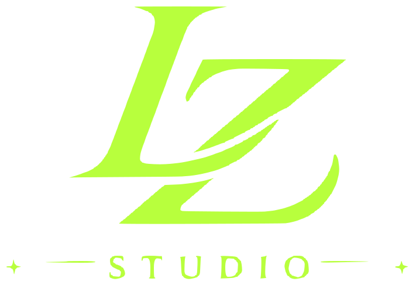

AUTOMÁTICO
Semitonos Premium
Vívido, IA ×2, semitono y correcciones de impresión en un solo flujo.
Abrir herramientaCómo usar
Carga tu imagen, elige color y zona, y crea el semitono. Se verifica un mínimo de 0.5 mm a la medida de impresión.
Prepara tus archivos, crea diseños y llévalos al pliego. Todo en un solo lugar.

16 herramientas disponibles
Vívido, IA ×2, semitono y correcciones de impresión en un solo flujo.
Abrir herramientaCarga tu imagen, elige color y zona, y crea el semitono. Se verifica un mínimo de 0.5 mm a la medida de impresión.
Elige el color a eliminar, crea la trama y revisa el resultado.
Abrir herramientaCarga tu imagen, elige el color que quieres eliminar y pulsa Aplicar semitono. Define la medida al exportar.
Elige un color del original para hacerlo transparente.
Abrir herramientaCarga la imagen, elige el color a quitar y pulsa Quitar color elegido.
Quita márgenes transparentes o recorta manualmente el espacio sobrante.
Abrir herramientaCarga una imagen, ajusta el recorte y descarga el PNG sin cambiar los píxeles originales.
Analiza y corrige las zonas semitransparentes automáticamente.
Abrir herramientaCarga tu PNG, compara los métodos y revisa el resultado sobre fondo claro y oscuro.
Detecta puntos pequeños y refuérzalos automáticamente o píxel a píxel.
Abrir herramientaCarga un PNG, indica la medida final y pulsa Corregir automáticamente. Compara y continúa en otra herramienta.
Revisa transparencia, grosor y color antes de imprimir.
Abrir herramientaCarga el archivo e indica la medida final. Compara la corrección automática con el original.
Letras urbanas, varsity y efectos para tus diseños.
Abrir herramientaEscribe el texto, selecciona estilo y efecto, y descarga el arte en PNG o SVG.
Desgaste vintage, grano, rayaduras y patrones.
Abrir herramientaCarga un diseño, elige una textura y ajusta desgaste, tamaño y ángulo. Los recortes son transparentes.
Convierte logotipos de colores sólidos a SVG editable.
Abrir herramientaUsa un arte de colores sólidos, ajusta el detalle y genera el archivo vectorial.
Elige el color original y el nuevo sin modificar los demás.
Abrir herramientaCarga la imagen, elige el color original con el cuentagotas, define el nuevo y pulsa Reemplazar color elegido.
Delimita el estampado de una foto y ajusta el fondo.
Abrir herramientaUsa una foto frontal y bien iluminada. Ajusta las cuatro esquinas; esta versión requiere selección manual.
Acomoda diseños en 58 cm y ajusta el tamaño desde sus esquinas.
Abrir herramientaDefine el largo, agrega imágenes y arrastra sus esquinas. Mover vista permite recorrer el pliego con zoom.
Prueba tu diseño sobre playeras, sudaderas y gorras.
Abrir herramientaElige un producto, carga el diseño y ajusta posición, tamaño y color antes de descargar.
Ajusta iluminación, contraste y vibrancia, o aplica un estilo rápido.
Abrir herramientaCarga una imagen, usa Auto o mueve los ajustes y compara con el original. Define la medida antes de exportar.
Aumenta resolución y detalle ×2 con IA, sin aplicar semitonos.
Abrir herramientaCarga una imagen compatible, pulsa Mejorar imagen ×2 y compara antes de descargar.
Prueba con otro nombre o muestra todas las categorías.